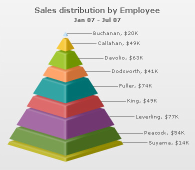

| Pyramid Chart |
Pyramid charts are used in comparison of data, e.g. sales data of a product for a year. A pyramid chart consists of various segments, each representing a dataset. The height of the pyramid segment with respect to the entire pyramid depicts the value for that particular dataset. Each pyramid segment can have its individual properties like background, border etc. to help distinguish them from one another. Adjacent to the pyramid segments, the label and value of that pyramid can be displayed. Shown below is a simple pyramid chart generated using FusionWidgets: |
|  |
| Salient Features |
|